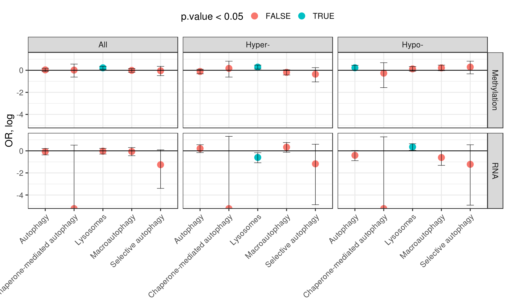

Results Appendix
Stats for Results Section
Appendix PD vs Controls, Padlocks
## Number of loci 182024## Cases and controls:## Diagnosis
## Control PD/LBD
## 19 24## Number of significant loci 928## Number of genes affects 326Direction enrichment
##
## -1 1
## FALSE 87943 93124
## TRUE 376 552##
## Fisher's Exact Test for Count Data
##
## data: .
## p-value = 1.046e-06
## alternative hypothesis: true odds ratio is not equal to 1
## 95 percent confidence interval:
## 1.213484 1.585367
## sample estimates:
## odds ratio
## 1.386401Genomic enrichment
## Expected, % Obseverd, % OR Lo Hi P
## 1: 0.58119179 0.57650862 0.9808703 0.8592082 1.1205660 7.896205e-01
## 2: 0.64307811 0.42564655 0.4093252 0.3583334 0.4672773 1.773217e-41
## 3: 0.09078821 0.05495690 0.5810935 0.4290376 0.7713622 5.817118e-05
## 4: 0.22464353 0.32435345 1.6618031 1.4429236 1.9105317 2.970903e-12
## 5: 0.04233633 0.20043103 5.7856458 4.8920968 6.8176576 3.198655e-70
## 6: 0.02511607 0.09051724 3.9167461 3.0855907 4.9162060 1.956929e-23
## 7: 0.15933405 0.20581897 1.3697844 1.1614894 1.6090920 1.840789e-04
## 8: 0.05352894 0.03879310 0.7125332 0.4955073 0.9948064 4.789977e-02
## 9: 0.22692931 0.14008621 0.5535825 0.4561456 0.6673310 3.270535e-11
## 10: 0.14586115 0.19827586 1.4513385 1.2276046 1.7086580 1.371840e-05
## 11: 0.07596912 0.22413793 3.5521664 3.0264545 4.1549804 1.710097e-45
## P < 0.05 Category Type
## 1: hg19_genes_introns All
## 2: *** hg19_cpg_inter All
## 3: *** hg19_cpg_shelves All
## 4: *** hg19_cpg_shores All
## 5: *** hg19_cpg_islands All
## 6: *** hg19_genes_5UTRs All
## 7: *** hg19_genes_exons All
## 8: * hg19_genes_3UTRs All
## 9: *** hg19_genes_intergenic All
## 10: *** hg19_genes_1to5kb All
## 11: *** hg19_genes_promoters All## Expected, % Obseverd, % OR Lo Hi P
## 1: 0.06178192 0.24030172 4.8799913 4.1740179 5.6887812 1.242559e-69
## 2: 0.06178192 0.38768116 9.7821017 8.1942692 11.6531103 7.446640e-111
## 3: 0.06178192 0.02393617 0.3719065 0.1686697 0.7140582 1.156806e-03
## 4: 0.10495343 0.07866379 0.7270894 0.5641960 0.9246258 8.402415e-03
## 5: 0.10495343 0.07065217 0.6476122 0.4549934 0.8979160 6.638033e-03
## 6: 0.10495343 0.09042553 0.8475247 0.5772500 1.2079775 3.997174e-01
## 7: 0.17272453 0.22413793 1.3862033 1.1816744 1.6204897 5.977400e-05
## 8: 0.17272453 0.31521739 2.2114258 1.8363643 2.6544362 2.730163e-16
## 9: 0.17272453 0.09042553 0.4755940 0.3239653 0.6777756 7.848752e-06
## P < 0.05 Category Type
## 1: *** Promoter All
## 2: *** Promoter Hyper-
## 3: ** Promoter Hypo-
## 4: ** PoisedEnhancer All
## 5: ** PoisedEnhancer Hyper-
## 6: PoisedEnhancer Hypo-
## 7: *** ActiveEnhancer All
## 8: *** ActiveEnhancer Hyper-
## 9: *** ActiveEnhancer Hypo-Enrichment of ALP pathways with DMCs
## estimate p.value conf.low conf.high
## 1: 0.9573666 0.9207028622 0.6156104 1.424297
## 2: 0.7026202 0.3007716576 0.3484172 1.268370
## 3: 1.3385645 0.2718588807 0.7239546 2.277442
## 4: 0.9890237 0.9331831932 0.8338224 1.167865
## 5: 0.8286218 0.1150447767 0.6534123 1.040933
## 6: 1.2437198 0.0869078585 0.9646624 1.589275
## 7: 1.2474292 0.0009557178 1.0919620 1.426230
## 8: 1.3332721 0.0009795409 1.1201590 1.589722
## 9: 1.1315301 0.2546174665 0.9180836 1.396792
## 10: 1.0164594 0.8875260281 0.5383671 1.750191
## 11: 1.1863592 0.5800249195 0.5389238 2.272600
## 12: 0.7688460 0.8237682844 0.2082274 1.987499
## 13: 1.0339789 0.6516878184 0.8895633 1.198707
## 14: 0.8964805 0.2839678986 0.7309250 1.093487
## 15: 1.2546253 0.0448162125 0.9976683 1.569468
## method alternative Term
## 1: Fisher's Exact Test for Count Data two.sided GO:0061912
## 2: Fisher's Exact Test for Count Data two.sided GO:0061912
## 3: Fisher's Exact Test for Count Data two.sided GO:0061912
## 4: Fisher's Exact Test for Count Data two.sided GO:0016236
## 5: Fisher's Exact Test for Count Data two.sided GO:0016236
## 6: Fisher's Exact Test for Count Data two.sided GO:0016236
## 7: Fisher's Exact Test for Count Data two.sided GO:0005764
## 8: Fisher's Exact Test for Count Data two.sided GO:0005764
## 9: Fisher's Exact Test for Count Data two.sided GO:0005764
## 10: Fisher's Exact Test for Count Data two.sided GO:0061684
## 11: Fisher's Exact Test for Count Data two.sided GO:0061684
## 12: Fisher's Exact Test for Count Data two.sided GO:0061684
## 13: Fisher's Exact Test for Count Data two.sided GO:0006914
## 14: Fisher's Exact Test for Count Data two.sided GO:0006914
## 15: Fisher's Exact Test for Count Data two.sided GO:0006914
## Name Type Dir
## 1: Selective autophagy Target All
## 2: Selective autophagy Target Hyper-
## 3: Selective autophagy Target Hypo-
## 4: Macroautophagy Target All
## 5: Macroautophagy Target Hyper-
## 6: Macroautophagy Target Hypo-
## 7: Lysosomes Target All
## 8: Lysosomes Target Hyper-
## 9: Lysosomes Target Hypo-
## 10: Chaperone-mediated autophagy Target All
## 11: Chaperone-mediated autophagy Target Hyper-
## 12: Chaperone-mediated autophagy Target Hypo-
## 13: Autophagy Target All
## 14: Autophagy Target Hyper-
## 15: Autophagy Target Hypo-Appendix PD vs Controls, RNAseq
## Number of genes affected 246The ALP genes tend to be down-regulated
##
## Fisher's Exact Test for Count Data
##
## data: .
## p-value = 0.002311
## alternative hypothesis: true odds ratio is not equal to 1
## 95 percent confidence interval:
## 1.422602 5.512114
## sample estimates:
## odds ratio
## 2.946471Downregulation of genes belonging to lysosomal pathway
##
## -1 1
## FALSE 108 123
## TRUE 3 12##
## Fisher's Exact Test for Count Data
##
## data: .
## p-value = 0.05951
## alternative hypothesis: true odds ratio is not equal to 1
## 95 percent confidence interval:
## 0.9106952 19.8101948
## sample estimates:
## odds ratio
## 3.49627Enrichment of ALP pathways with DEGs (nominally significant, p < 0.05)
## estimate p.value conf.low conf.high
## 1: 0.2848690 0.080679607 0.033372196 1.0965730
## 2: 0.3081378 0.368730846 0.007621483 1.8150409
## 3: 0.2951236 0.374055200 0.007300026 1.7382019
## 4: 0.9416623 0.790929641 0.641319232 1.3472913
## 5: 1.3929568 0.114900362 0.879114644 2.1197582
## 6: 0.5460653 0.054887335 0.268267354 0.9980949
## 7: 0.9727938 0.900573679 0.749552545 1.2483315
## 8: 0.5497994 0.004529585 0.339886314 0.8464226
## 9: 1.4234856 0.018528123 1.046359291 1.9038069
## 10: 0.0000000 0.150377146 0.000000000 1.6714127
## 11: 0.0000000 0.619674066 0.000000000 3.7045653
## 12: 0.0000000 0.620857640 0.000000000 3.5479623
## 13: 0.9315208 0.677397132 0.692787061 1.2338169
## 14: 1.2338310 0.217137881 0.850756088 1.7428100
## 15: 0.6656126 0.075169380 0.410627153 1.0272375
## method alternative Term
## 1: Fisher's Exact Test for Count Data two.sided GO:0061912
## 2: Fisher's Exact Test for Count Data two.sided GO:0061912
## 3: Fisher's Exact Test for Count Data two.sided GO:0061912
## 4: Fisher's Exact Test for Count Data two.sided GO:0016236
## 5: Fisher's Exact Test for Count Data two.sided GO:0016236
## 6: Fisher's Exact Test for Count Data two.sided GO:0016236
## 7: Fisher's Exact Test for Count Data two.sided GO:0005764
## 8: Fisher's Exact Test for Count Data two.sided GO:0005764
## 9: Fisher's Exact Test for Count Data two.sided GO:0005764
## 10: Fisher's Exact Test for Count Data two.sided GO:0061684
## 11: Fisher's Exact Test for Count Data two.sided GO:0061684
## 12: Fisher's Exact Test for Count Data two.sided GO:0061684
## 13: Fisher's Exact Test for Count Data two.sided GO:0006914
## 14: Fisher's Exact Test for Count Data two.sided GO:0006914
## 15: Fisher's Exact Test for Count Data two.sided GO:0006914
## Name Type Dir
## 1: Selective autophagy RNA All
## 2: Selective autophagy RNA Hyper-
## 3: Selective autophagy RNA Hypo-
## 4: Macroautophagy RNA All
## 5: Macroautophagy RNA Hyper-
## 6: Macroautophagy RNA Hypo-
## 7: Lysosomes RNA All
## 8: Lysosomes RNA Hyper-
## 9: Lysosomes RNA Hypo-
## 10: Chaperone-mediated autophagy RNA All
## 11: Chaperone-mediated autophagy RNA Hyper-
## 12: Chaperone-mediated autophagy RNA Hypo-
## 13: Autophagy RNA All
## 14: Autophagy RNA Hyper-
## 15: Autophagy RNA Hypo-Supplementary figures
Supp. Fig. Apx 1

Enrichment of genomic elements in apx pd vs controls
Supp. Fig. Apx 2

Enrichment of ALP pathways in apx pd vs controls
Supplementary tables
Supp. table 1 Robust linear regression fits on PD appendix case/control DNA methylation data
- Supp. table 2 Appendix PD vs Controls RNA-seq fits